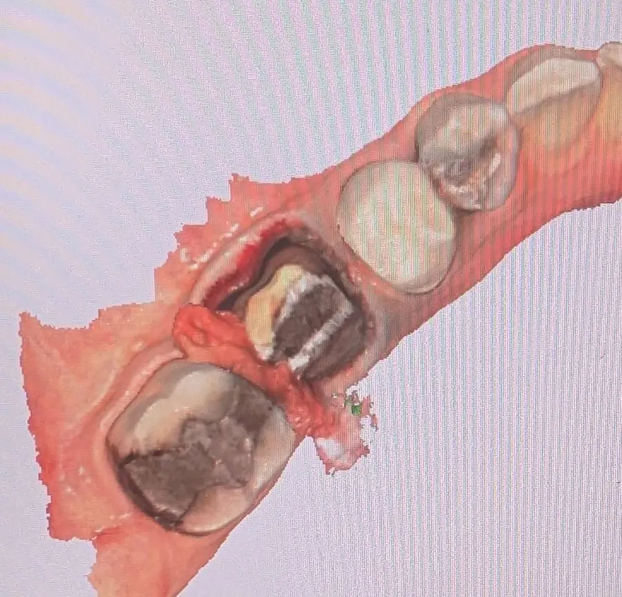

نسخه استخراجشده؛ ترجمه یا تأیید علمی انجام نشده است. وضعیت: captured
برای حذف یک اورهنگ نزدیک لثه، تماس با لثه اجتنابناپذیر بوده و حالا ناحیهی مارجین خونریزی دارد. میخواهی اسکن داخلدهانی بگیری. پیش از شروع اسکن چه باید کرد؟

در اسکن داخلدهانی، یکی از عوامل تعیینکننده در دقت دادهها کنترل کامل خونریزی در ناحیهی مارجین است. اسکنر آنچه میبیند را ثبت میکند؛ حضور خون میتواند مرز فینیشلاین را مخدوش کند و باعث خطا در ثبت و در نهایت در فیت رستوریشن شود.
در حالت ایدهآل باید از ابتدا با تراش کنترلشده و پرهیز از تماس غیرضروری با لثه از ایجاد خونریزی جلوگیری کرد. اما در برخی موقعیتها، مثل حذف اورهنگهای نزدیک لثه یا اصلاح مارجینهای سابجینجیوال، این تماس اجتنابناپذیر است؛ در این شرایط قبل از شروع اسکن باید خونریزی کنترل شود.
double cord باید با قضاوت بافتی انجام شود: اگر لثه نازک باشد، در ناحیهی زیبایی باشی یا فشار بیش از حد اعمال شود، این تکنیک میتواند به آسیب یا تحلیل لثه منجر شود.
با هر تکنیکی، فینیشلاین حین اسکن باید توسط اسکنر اسکن شود و زیر خمیر، نخ یا پنبه نباشد. کنترل خونریزی فقط یک مرحلهی مقدماتی نیست، بخشی از خود فرایند ثبت است؛ گاهی با مدیریت مرحلهای میدان و اصلاح موضعی دادهها به دقتی میرسی که در اسکن یکمرحلهای قابل دستیابی نیست.